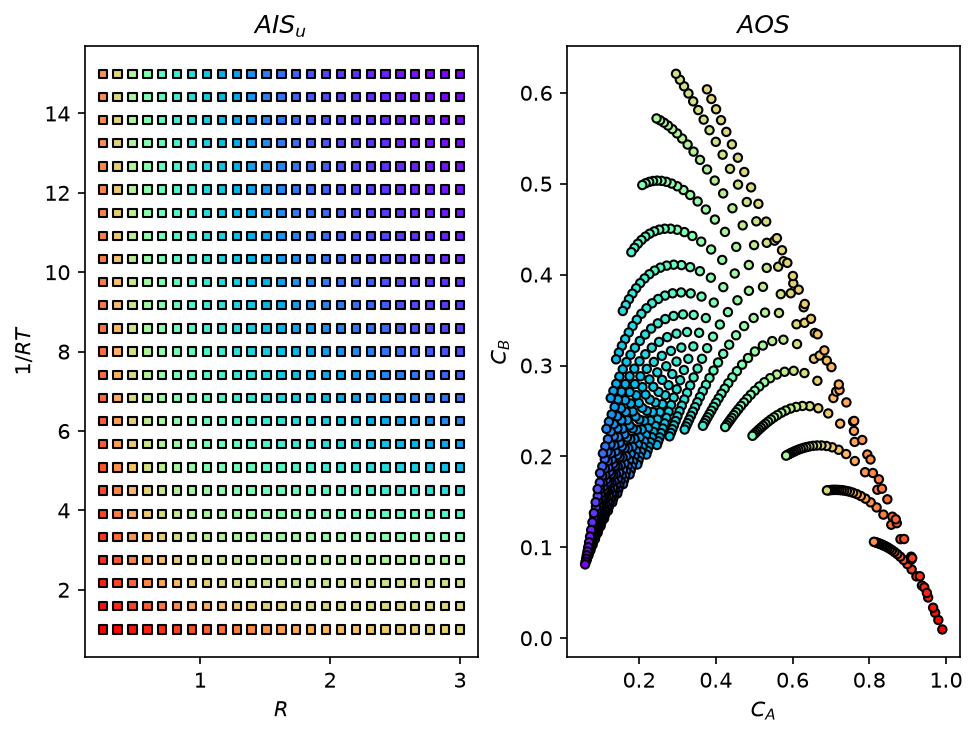
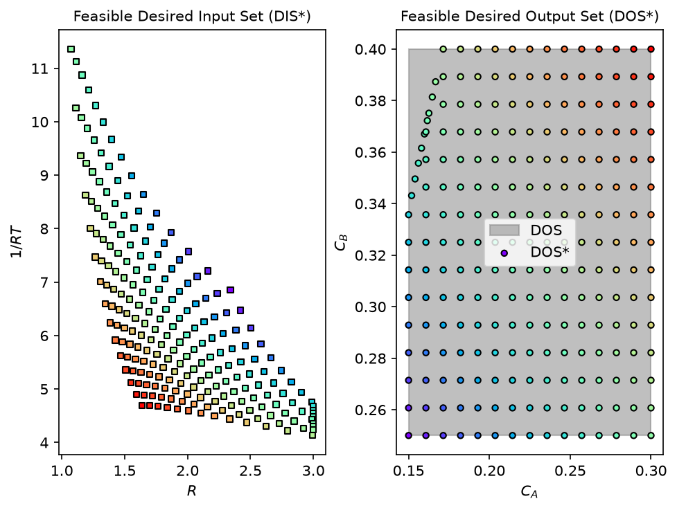

Inverse Mapping with the Pounce Solver#
Author: Victor Alves - Carnegie Mellon University
The inverse mapping in opyrability solves one nonlinear program (NLP) per point of the Desired Output Set (DOS) grid. As of this release the default solver is Pounce, an interior-point NLP solver written in Rust by John Kitchin’s group at Carnegie Mellon University. Its nonlinear core is a faithful port of the Ipopt filter line-search algorithm: the algorithm, the console log, and the option names follow Ipopt closely, so it drops in wherever method='ipopt' is used today.
Every interior-point iteration comes down to solving one linear system, the KKT system: a large, mostly empty (sparse) matrix that is symmetric and indefinite (it has both positive and negative eigenvalues). Ipopt hands this step to a Fortran linear-algebra library (for example the HSL solvers); Pounce instead uses FERAL, a sparse symmetric indefinite direct solver also written in Rust. “Direct” means it factorizes the matrix rather than iterating toward the solution, and it returns the inertia (the count of positive and negative eigenvalues), which the interior-point method uses to tell a genuine minimum from a saddle point and to decide when to regularize. Because FERAL is bundled, Pounce installs from precompiled wheels with pip install pounce-solver, with no separate linear-algebra library to obtain and build. Ipopt through cyipopt remains available with method='ipopt'.
This tutorial maps a small continuous stirred-tank reactor (CSTR) with consecutive reactions A \(\rightarrow\) B \(\rightarrow\) C [21], whose Achievable Output Set is nonconvex, and highlights:
The inverse mapping with
method='pounce'(the default) and the one-argument switch tomethod='ipopt'Numerical derivatives, where Pounce computes central finite differences internally when
ad=FalseJAX automatic differentiation with
ad=True, where opyrability supplies the exact objective gradientA constrained inverse mapping
Let’s define the process model and the operability sets. The reactor radius \(R\) and the dimensionless inverse temperature \(1/RT\) are the design inputs; the reactant and intermediate concentrations \(C_A\) and \(C_B\) are the outputs:
import time
import warnings
import numpy as np
import jax.numpy as jnp
import matplotlib.pyplot as plt
# The default Pounce solver emits an informational warning when it falls back
# to finite-difference gradients (ad=False); silence it in this tutorial.
warnings.filterwarnings('ignore', message='pounce.minimize is approximating')
def CSTR(u):
"""
Steady-state CSTR with the consecutive reactions A -> B -> C.
Solves the steady-state mass balance for the reactant concentration (the
meaningful root of the resulting quadratic) and evaluates the intermediate.
Parameters
----------
u : array-like, shape (2,)
Inputs [R, RT]: the reactor radius R and the dimensionless inverse
temperature 1/RT.
Returns
-------
numpy.ndarray, shape (2,)
Outputs [Ca, Cb]: the reactant and intermediate concentrations.
"""
v0, Ca0, H = 1.0, 1.0, 1.0
volume = np.pi * u[0] ** 2 * H
k1, k2 = np.exp(-3.0 / u[1]), np.exp(-10.0 / u[1])
a, b, c = volume * k1, v0 + volume * k2, -v0 * Ca0
Ca = (-b + np.sqrt(b ** 2 - 4 * a * c)) / (2 * a)
Cb = k1 * Ca ** 2 * volume / v0
return np.array([Ca, Cb])
def CSTR_jax(u):
"""
JAX version of :func:`CSTR`, used for the ``ad=True`` path below.
Identical model written with ``jax.numpy`` so opyrability can take the
exact objective gradient with ``jax.grad``.
Parameters
----------
u : array-like, shape (2,)
Inputs [R, RT]: reactor radius and dimensionless inverse temperature.
Returns
-------
jax.numpy.ndarray, shape (2,)
Outputs [Ca, Cb]: the reactant and intermediate concentrations.
"""
v0, Ca0, H = 1.0, 1.0, 1.0
volume = jnp.pi * u[0] ** 2 * H
k1, k2 = jnp.exp(-3.0 / u[1]), jnp.exp(-10.0 / u[1])
a, b, c = volume * k1, v0 + volume * k2, -v0 * Ca0
Ca = (-b + jnp.sqrt(b ** 2 - 4 * a * c)) / (2 * a)
Cb = k1 * Ca ** 2 * volume / v0
return jnp.array([Ca, Cb])
AIS_bounds = np.array([[0.25, 3.00],
[1.00, 15.00]])
DOS_bounds = np.array([[0.15, 0.30],
[0.25, 0.40]])
u0 = np.array([1.5, 8.0]) # Initial estimate [R, RT].
lb = np.array([0.25, 1.0])
ub = np.array([3.00, 15.0])
labels = ['$R$', '$1/RT$', '$C_A$', '$C_B$']
A nonconvex achievable output set#
Mapping the input set forward shows the shape of this problem: as the inputs vary, the conversion of A falls while the intermediate B first rises and then falls, so the Achievable Output Set is nonconvex and bends back on itself.
from opyrability import AIS2AOS_map
AIS, AOS = AIS2AOS_map(CSTR, AIS_bounds, [25, 25],
plot=True,
labels=labels)

Inverse mapping with numerical derivatives (default)#
With ad=False (the default), Pounce computes central finite differences internally, so any black-box model works. Solving the same inverse mapping with both solvers:
from opyrability import nlp_based_approach
# method='pounce' is the default; shown explicitly here for clarity.
start = time.time()
fDIS_pounce, fDOS_pounce, msg_pounce = nlp_based_approach(CSTR,
DOS_bounds,
[15, 15],
u0,
lb,
ub,
method='pounce',
plot=True,
labels=labels)
t_pounce = time.time() - start
start = time.time()
fDIS_ipopt, fDOS_ipopt, msg_ipopt = nlp_based_approach(CSTR,
DOS_bounds,
[15, 15],
u0,
lb,
ub,
method='ipopt',
plot=True)
t_ipopt = time.time() - start
print(f'Pounce: {t_pounce:.2f} s | cyipopt: {t_ipopt:.2f} s')
print(f'Max difference, DIS*: '
f'{np.abs(np.asarray(fDIS_pounce) - np.asarray(fDIS_ipopt)).max():.2e}')
print(f'Max difference, DOS*: '
f'{np.abs(np.asarray(fDOS_pounce) - np.asarray(fDOS_ipopt)).max():.2e}')
Pounce: 2.24 s | cyipopt: 10.83 s
Max difference, DIS*: 3.71e-06
Max difference, DOS*: 2.12e-07

The two solvers find the same DIS*/DOS* to solver tolerance: Pounce is a faithful port of the Ipopt algorithm, so it can be swapped in anywhere method='ipopt' is used today.
Automatic differentiation: exact gradients#
With ad=True and a JAX-compatible model, opyrability builds the exact objective gradient with jax.grad. The Hessian is left to Ipopt’s limited-memory (L-BFGS) approximation, which both Pounce and cyipopt (\(\geq\) 1.7.0) use when no Hessian is supplied and which is faster than a dense AD Hessian on problems of this size:
start = time.time()
fDIS_ad, fDOS_ad, msg_ad = nlp_based_approach(CSTR_jax,
DOS_bounds,
[15, 15],
u0,
lb,
ub,
method='pounce',
ad=True,
plot=False)
t_ad = time.time() - start
print(f'Pounce with exact JAX gradient: {t_ad:.2f} s')
print(f'Max difference vs numerical path, DOS*: '
f'{np.abs(np.asarray(fDOS_ad) - np.asarray(fDOS_pounce)).max():.2e}')
You have selected automatic differentiation as a method for obtaining higher-order data (Jacobians/Hessian),
Make sure your process model is JAX-compatible implementation-wise.
Pounce with exact JAX gradient: 113.10 s
Max difference vs numerical path, DOS*: 1.66e-11
Constrained inverse mapping#
Pounce consumes the same constraint dictionary format as cyipopt. Here a fabrication limit requires the inverse temperature to be at least twice the reactor radius, \(1/RT \geq 2R\):
con = {'type': 'ineq', 'fun': lambda u: u[1] - 2.0 * u[0]} # RT >= 2R
fDIS_con, fDOS_con, msg_con = nlp_based_approach(CSTR,
DOS_bounds,
[15, 15],
u0,
lb,
ub,
method='pounce',
constr=con,
plot=False)
violation = (2.0 * fDIS_con[:, 0] - fDIS_con[:, 1]).max()
print(f'Largest constraint violation (2R - RT): {violation:.2e}')
Largest constraint violation (2R - RT): -4.65e-08
Conclusions#
Key Results:
method='pounce'is the default inverse-mapping solver and reproduces the cyipopt result to solver tolerance on the curved CSTR, with numerical derivatives, with JAX gradients, and with constraints.Pounce installs from precompiled wheels with a single pip command, since it bundles the FERAL linear solver and needs no separate Fortran linear-algebra library.
method='ipopt'remains available for users with cyipopt installed.
Workflow Summary:
pip install pounce-solver(already a core dependency of opyrability).Call
nlp_based_approachas usual;method='pounce'is the default.Optionally set
ad=Truewith a JAX-compatible model for exact objective gradients.